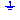
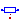
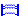
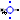
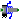
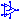
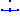
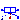
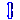
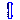

Basic electrical components
This package contains very basic analog electrical components such as resistor, conductor, capacitor, inductor, and the ground (which is needed in each electrical circuit description. Furthermore, controlled sources, coupling components, and some improved (but nevertheless basic) are in this package.
Extends from Modelica.Icons.Package (Icon for standard packages).
| Name | Description |
|---|---|
|  Ground | Ground node |
|  Resistor | Ideal linear electrical resistor |
| Conductor | Ideal linear electrical conductor |
| Ideal linear electrical capacitor | |
| Inductor | Ideal linear electrical inductor |
| SaturatingInductor | Simple model of an inductor with saturation |
| Transformer with two ports | |
|  M_Transformer | Generic transformer with free number of inductors |
| Gyrator | Gyrator |
|  RotationalEMF | Electromotoric force (electric/mechanic transformer) |
|  TranslationalEMF | Electromotoric force (electric/mechanic transformer) |
| VCV | Linear voltage-controlled voltage source |
| VCC | Linear voltage-controlled current source |
| CCV | Linear current-controlled voltage source |
| CCC | Linear current-controlled current source |
|  OpAmp | Simple nonideal model of an OpAmp with limitation |
| Detailed model of an operational amplifier | |
| Ideal linear electrical resistor with variable resistance | |
| Ideal linear electrical conductor with variable conductance | |
|  VariableCapacitor | Ideal linear electrical capacitor with variable capacitance |
| Ideal linear electrical inductor with variable inductance | |
|  Potentiometer | Adjustable resistor |
|  GeneralCurrentToVoltageAdaptor | Signal adaptor for an Electrical OnePort with voltage and derivative of voltage as outputs and current and derivative of current as inputs (especially useful for FMUs) |
|  GeneralVoltageToCurrentAdaptor | Signal adaptor for an Electrical OnePort with current and derivative of current as output and voltage and derivative of voltage as input (especially useful for FMUs) |
Ground node
Ground of an electrical circuit. The potential at the ground node is zero. Every electrical circuit has to contain at least one ground object.
| Name | Description |
|---|---|
| p |
Ideal linear electrical resistor
The linear resistor connects the branch voltage v with the branch current i by i*R = v. The Resistance R is allowed to be positive, zero, or negative.
Extends from Modelica.Electrical.Analog.Interfaces.OnePort (Component with two electrical pins p and n and current i from p to n), Modelica.Electrical.Analog.Interfaces.ConditionalHeatPort (Partial model to include a conditional HeatPort in order to describe the power loss via a thermal network).
| Name | Description |
|---|---|
| R | Resistance at temperature T_ref [Ohm] |
| T_ref | Reference temperature [K] |
| alpha | Temperature coefficient of resistance (R_actual = R*(1 + alpha*(T_heatPort - T_ref)) [1/K] |
| useHeatPort | = true, if heatPort is enabled |
| T | Fixed device temperature if useHeatPort = false [K] |
| Name | Description |
|---|---|
| p | Positive electrical pin |
| n | Negative electrical pin |
| heatPort | Conditional heat port |
Ideal linear electrical conductor
The linear conductor connects the branch voltage v with the branch current i by i = v*G. The Conductance G is allowed to be positive, zero, or negative.
Extends from Modelica.Electrical.Analog.Interfaces.OnePort (Component with two electrical pins p and n and current i from p to n), Modelica.Electrical.Analog.Interfaces.ConditionalHeatPort (Partial model to include a conditional HeatPort in order to describe the power loss via a thermal network).
| Name | Description |
|---|---|
| G | Conductance at temperature T_ref [S] |
| T_ref | Reference temperature [K] |
| alpha | Temperature coefficient of conductance (G_actual = G_ref/(1 + alpha*(T_heatPort - T_ref)) [1/K] |
| useHeatPort | = true, if heatPort is enabled |
| T | Fixed device temperature if useHeatPort = false [K] |
| Name | Description |
|---|---|
| p | Positive electrical pin |
| n | Negative electrical pin |
| heatPort | Conditional heat port |
 Modelica.Electrical.Analog.Basic.Capacitor
Modelica.Electrical.Analog.Basic.CapacitorIdeal linear electrical capacitor
The linear capacitor connects the branch voltage v with the branch current i by i = C * dv/dt. The Capacitance C is allowed to be positive or zero.
Extends from Interfaces.OnePort (Component with two electrical pins p and n and current i from p to n).
| Name | Description |
|---|---|
| C | Capacitance [F] |
| Initialization | |
| v | Voltage drop of the two pins (= p.v - n.v) [V] |
| Name | Description |
|---|---|
| p | Positive electrical pin |
| n | Negative electrical pin |
 Modelica.Electrical.Analog.Basic.Inductor
Modelica.Electrical.Analog.Basic.InductorIdeal linear electrical inductor
The linear inductor connects the branch voltage v with the branch current i by v = L * di/dt. The Inductance L is allowed to be positive, or zero.
Extends from Interfaces.OnePort (Component with two electrical pins p and n and current i from p to n).
| Name | Description |
|---|---|
| L | Inductance [H] |
| Initialization | |
| i | Current flowing from pin p to pin n [A] |
| Name | Description |
|---|---|
| p | Positive electrical pin |
| n | Negative electrical pin |
Simple model of an inductor with saturation
This model approximates the behaviour of an inductor with the influence of saturation, i.e., the value of the inductance depends on the current flowing through the inductor (Fig. 1). The inductance decreases as current increases. Note, that hysteresis is not taken into account.
The approximation of the flux linkage is based on the atan function with an additional linear term,
as shown in Fig. 2:
Psi = Linf*i + (Lzer - Linf)*Ipar*atan(i/Ipar) L = Psi/i = Linf + (Lzer - Linf)*atan(i/Ipar)/(i/Ipar)
This approximation is with good performance and easy to adjust to a given characteristic with only four parameters (Tab. 1).
| Variable | Description |
|---|---|
Inom. |
Nominal current |
Lnom |
Nominal inductance at nominal current |
Lzer |
Inductance near current = 0; Lzer has to be greater than Lnom |
Linf |
Inductance at large currents; Linf has to be less than Lnom |
The parameter Ipar is calculated internally from the relationship:
Lnom = Linf + (Lzer - Linf)*atan(Inom/Ipar)/(Inom/Ipar)

|

|
The flux slope in Fig. 2 is equal to Lzer for small currents.
The limit of the flux slope is Linf as the current i approaches infinity.
The nominal flux is indicated by the product of the nominal inductance Lnom and the nominal current Inom.
Extends from Modelica.Electrical.Analog.Interfaces.OnePort (Component with two electrical pins p and n and current i from p to n).
| Name | Description |
|---|---|
| Inom | Nominal current [A] |
 | |
| Lnom | Nominal inductance at Nominal current [H] |
| Lzer | Inductance near current=0 [H] |
| Linf | Inductance at large currents [H] |
| Initialization | |
| i | Current flowing from pin p to pin n [A] |
| Name | Description |
|---|---|
| p | Positive electrical pin |
| n | Negative electrical pin |
Transformer with two ports
The transformer is a two port. The left port voltage v1, left port current i1, right port voltage v2 and right port current i2 are connected by the following relation:
| v1 | | L1 M | | i1' | | | = | | | | | v2 | | M L2 | | i2' |
L1, L2, and M are the primary, secondary, and coupling inductances respectively.
Extends from Interfaces.TwoPort (Component with two electrical ports, including current).
| Name | Description |
|---|---|
| L1 | Primary inductance [H] |
| L2 | Secondary inductance [H] |
| M | Coupling inductance [H] |
| Initialization | |
| i1 | Current flowing from pos. to neg. pin of port 1 [A] |
| i2 | Current flowing from pos. to neg. pin of port 2 [A] |
| Name | Description |
|---|---|
| p1 | Positive electrical pin of port 1 |
| n1 | Negative electrical pin of port 1 |
| p2 | Positive electrical pin of port 2 |
| n2 | Negative electrical pin of port 2 |
Generic transformer with free number of inductors
The model M_Transformer is a model of a transformer with the possibility to choose the number of inductors. Inside the model, an inductance matrix is built based on the inductance of the inductors and the coupling inductances between the inductors given as a parameter vector from the user of the model.
An example shows that approach:
The user chooses a model with three inductors, that means the parameter N has to be 3. Then he has to specify the inductances of the three inductors and the three coupling inductances. The coupling inductances are no real existing devices, but effects that occur between two inductors. The inductances (main diagonal of the inductance matrix) and the coupling inductances have to be specified in the parameter vector L. The length dimL of the parameter vector is calculated as follows: dimL=(N*(N+1))/2
The following example shows how the parameter vector is used to fill in the inductance matrix. To specify the inductance matrix of a three inductances transformer (N=3):
the user has to allocate the parameter vector L[6] , since Nv=(N*(N+1))/2=(3*(3+1))/2=6. The parameter vector must be filled like this: L=[1,0.1,0.2,2,0.3,3] .
Inside the model, two loops are used to fill the inductance matrix to guarantee that it is filled in a symmetric way.
| Name | Description |
|---|---|
| N | Number of inductors |
| L[dimL] | Inductances and coupling inductances [H] |
| Lm[N, N] | Complete symmetric inductance matrix, calculated internally [H] |
| Name | Description |
|---|---|
| p[N] | Positive pin |
| n[N] | Negative pin |
Gyrator
A gyrator is a two-port element defined by the following equations:
i1 = G2 * v2 i2 = -G1 * v1
where the constants G1, G2 are called the gyration conductance.
Extends from Interfaces.TwoPort (Component with two electrical ports, including current).
| Name | Description |
|---|---|
| G1 | Primary gyration conductance [S] |
| G2 | Secondary gyration conductance [S] |
| Name | Description |
|---|---|
| p1 | Positive electrical pin of port 1 |
| n1 | Negative electrical pin of port 1 |
| p2 | Positive electrical pin of port 2 |
| n2 | Negative electrical pin of port 2 |
Electromotoric force (electric/mechanic transformer)
EMF transforms electrical energy into rotational mechanical energy. It is used as basic building block of an electrical motor. The mechanical connector flange can be connected to elements of the Modelica.Mechanics.Rotational library. flange.tau is the cut-torque, flange.phi is the angle at the rotational connection.
| Name | Description |
|---|---|
| useSupport | = true, if support flange enabled, otherwise implicitly grounded |
| k | Transformation coefficient [N.m/A] |
| Name | Description |
|---|---|
| p | Positive electrical pin |
| n | Negative electrical pin |
| flange | Flange |
| support | Support/housing of emf shaft |
Electromotoric force (electric/mechanic transformer)
EMF transforms electrical energy into translational mechanical energy. It is used as basic building block of an electrical linear motor. The mechanical connector flange can be connected to elements of the Modelica.Mechanics.Translational library. flange.f is the cut-force, flange.s is the distance at the translational connection.
| Name | Description |
|---|---|
| useSupport | = true, if support flange enabled, otherwise implicitly grounded |
| k | Transformation coefficient [N/A] |
| Name | Description |
|---|---|
| p | Positive electrical pin |
| n | Negative electrical pin |
| flange | Flange |
| support | Support/housing |
Linear voltage-controlled voltage source
The linear voltage-controlled voltage source is a TwoPort. The right port voltage v2 is controlled by the left port voltage v1 via
v2 = v1 * gain.
The left port current is zero. Any voltage gain can be chosen.
Extends from Interfaces.TwoPort (Component with two electrical ports, including current).
| Name | Description |
|---|---|
| gain | Voltage gain |
| Name | Description |
|---|---|
| p1 | Positive electrical pin of port 1 |
| n1 | Negative electrical pin of port 1 |
| p2 | Positive electrical pin of port 2 |
| n2 | Negative electrical pin of port 2 |
Linear voltage-controlled current source
The linear voltage-controlled current source is a TwoPort. The right port current i2 is controlled by the left port voltage v1 via
i2 = v1 * transConductance.
The left port current is zero. Any transConductance can be chosen.
Extends from Interfaces.TwoPort (Component with two electrical ports, including current).
| Name | Description |
|---|---|
| transConductance | Transconductance [S] |
| Name | Description |
|---|---|
| p1 | Positive electrical pin of port 1 |
| n1 | Negative electrical pin of port 1 |
| p2 | Positive electrical pin of port 2 |
| n2 | Negative electrical pin of port 2 |
Linear current-controlled voltage source
The linear current-controlled voltage source is a TwoPort. The right port voltage v2 is controlled by the left port current i1 via
v2 = i1 * transResistance.
The left port voltage is zero. Any transResistance can be chosen.
Extends from Interfaces.TwoPort (Component with two electrical ports, including current).
| Name | Description |
|---|---|
| transResistance | Transresistance [Ohm] |
| Name | Description |
|---|---|
| p1 | Positive electrical pin of port 1 |
| n1 | Negative electrical pin of port 1 |
| p2 | Positive electrical pin of port 2 |
| n2 | Negative electrical pin of port 2 |
Linear current-controlled current source
The linear current-controlled current source is a TwoPort. The right port current i2 is controlled by the left port current i1 via
i2 = i1 * gain.
The left port voltage is zero. Any current gain can be chosen.
Extends from Interfaces.TwoPort (Component with two electrical ports, including current).
| Name | Description |
|---|---|
| gain | Current gain |
| Name | Description |
|---|---|
| p1 | Positive electrical pin of port 1 |
| n1 | Negative electrical pin of port 1 |
| p2 | Positive electrical pin of port 2 |
| n2 | Negative electrical pin of port 2 |
Simple nonideal model of an OpAmp with limitation
The OpAmp is a simple nonideal model with a smooth out.v = f(vin) characteristic, where "vin = in_p.v - in_n.v". The characteristic is limited by VMax.v and VMin.v. Its slope at vin=0 is the parameter Slope, which must be positive. (Therefore, the absolute value of Slope is taken into calculation.)
| Name | Description |
|---|---|
| Slope | Slope of the out.v/vin characteristic at vin=0 |
| Name | Description |
|---|---|
| in_p | Positive pin of the input port |
| in_n | Negative pin of the input port |
| out | Output pin |
| VMax | Positive output voltage limitation |
| VMin | Negative output voltage limitation |
Detailed model of an operational amplifier
The OpAmpDetailed model is a general operational amplifier model. The emphasis is on separating each important data sheet parameter into a sub-circuit independent of the other parameters. The model is broken down into five functional stages input, frequency response, gain, slew rate and an output stage. Each stage contains data sheet parameters to be modeled. This partitioning and the modelling of the separate submodels are based on the description in [Conelly1992].
Using [Conelly1992] Joachim Haase (Fraunhofer Institute for Integrated Circuits, Design Automation Division) transferred 2001 operational amplifier models into VHDL-AMS. Now one of these models, the model "amp(macro)" was transferred into Modelica.
| Name | Description |
|---|---|
| Rdm | Input resistance (differential input mode) [Ohm] |
| Rcm | Input resistance (common mode) [Ohm] |
| Cin | Input capacitance [F] |
| Vos | Input offset voltage [V] |
| Ib | Input bias current [A] |
| Ios | Input offset current [A] |
| vcp | Correction value for limiting by p_supply [V] |
| vcm | Correction value for limiting by msupply [V] |
| Avd0 | Differential amplifier [dB] |
| CMRR | Common-mode rejection [dB] |
| fp1 | Dominant pole [Hz] |
| fp2 | Pole frequency [Hz] |
| fp3 | Pole frequency [Hz] |
| fp4 | Pole frequency [Hz] |
| fz | Zero frequency [Hz] |
| sr_p | Slew rate for increase [V/s] |
| sr_m | Slew rate for decrease [V/s] |
| Rout | Output resistance [Ohm] |
| Imaxso | Maximal output current (source current) [A] |
| Imaxsi | Maximal output current (sink current) [A] |
| Ts | Sampling time [s] |
| Name | Description |
|---|---|
| p | Positive pin of the input port |
| m | Negative pin of the input port |
| outp | Output pin |
| p_supply | Positive output voltage limitation |
| m_supply | Negative output voltage limitation |
 Modelica.Electrical.Analog.Basic.VariableResistor
Modelica.Electrical.Analog.Basic.VariableResistorIdeal linear electrical resistor with variable resistance
The linear resistor connects the branch voltage v with the branch current i by
i*R = v
The Resistance R is given as input signal.
Attention!!!
It is recommended that the R signal should not cross the zero value. Otherwise depending on the surrounding circuit the probability of singularities is high.
Extends from Modelica.Electrical.Analog.Interfaces.OnePort (Component with two electrical pins p and n and current i from p to n), Modelica.Electrical.Analog.Interfaces.ConditionalHeatPort (Partial model to include a conditional HeatPort in order to describe the power loss via a thermal network).
| Name | Description |
|---|---|
| T_ref | Reference temperature [K] |
| alpha | Temperature coefficient of resistance (R_actual = R*(1 + alpha*(T_heatPort - T_ref)) [1/K] |
| useHeatPort | = true, if heatPort is enabled |
| T | Fixed device temperature if useHeatPort = false [K] |
| Name | Description |
|---|---|
| p | Positive electrical pin |
| n | Negative electrical pin |
| heatPort | Conditional heat port |
| R | [Ohm] |
Modelica.Electrical.Analog.Basic.VariableConductorIdeal linear electrical conductor with variable conductance
The linear conductor connects the branch voltage v with the branch current i by
i = G*v
The Conductance G is given as input signal.
Attention!!!
It is recommended that the G signal should not cross the zero value. Otherwise depending on the surrounding circuit the probability of singularities is high.
Extends from Modelica.Electrical.Analog.Interfaces.OnePort (Component with two electrical pins p and n and current i from p to n), Modelica.Electrical.Analog.Interfaces.ConditionalHeatPort (Partial model to include a conditional HeatPort in order to describe the power loss via a thermal network).
| Name | Description |
|---|---|
| T_ref | Reference temperature [K] |
| alpha | Temperature coefficient of conductance (G_actual = G/(1 + alpha*(T_heatPort - T_ref)) [1/K] |
| useHeatPort | = true, if heatPort is enabled |
| T | Fixed device temperature if useHeatPort = false [K] |
| Name | Description |
|---|---|
| p | Positive electrical pin |
| n | Negative electrical pin |
| heatPort | Conditional heat port |
| G | [S] |
Ideal linear electrical capacitor with variable capacitance
The linear capacitor connects the branch voltage v with the branch current i by
i = dQ/dt with Q = C * v.
The capacitance C is given as input signal.
It is required that C ≥ 0, otherwise an assertion is raised. To avoid a variable index system,
C = Cmin, if 0 ≤ C < Cmin, where Cmin is a parameter with default value Modelica.Constants.eps.
Besides the Cmin parameter the capacitor model has got the two parameters IC and UIC that belong together. With the IC parameter the user can specify an initial value of the voltage over the capacitor, which is defined from positive pin p to negative pin n (v=p.v - n.v).
Hence the capacitor is charged at the beginning of the simulation. The other parameter UIC is of type Boolean. If UIC is true, the simulation tool uses
the IC value at the initial calculation by adding the equation v= IC. If UIC is false, the IC value can be used (but it does not need to!) to calculate the initial values in order to simplify the numerical algorithms of initial calculation.
Extends from Modelica.Electrical.Analog.Interfaces.OnePort (Component with two electrical pins p and n and current i from p to n).
| Name | Description |
|---|---|
| Cmin | Lower bound for variable capacitance [F] |
| IC | Initial Value [V] |
| UIC | Decision if initial value IC shall be used |
| Name | Description |
|---|---|
| p | Positive electrical pin |
| n | Negative electrical pin |
| C | [F] |
Ideal linear electrical inductor with variable inductance
The linear inductor connects the branch voltage v with the branch current i by
v = d Psi/dt with Psi = L * i .
The inductance L is as input signal.
It is required that L ≥ 0, otherwise an assertion is raised. To avoid a variable index system, L = Lmin, if 0 ≤ L < Lmin, where Lmin is a parameter with default value Modelica.Constants.eps.
Besides the Lmin parameter the inductor model has got the two parameters IC and UIC that belong together. With the IC parameter the user can specify an initial value of the current that flows through the inductor.
Hence the inductor has an initial current at the beginning of the simulation. The other parameter UIC is of type Boolean. If UIC is true, the simulation tool uses
the IC value at the initial calculation by adding the equation i= IC. If UIC is false, the IC value can be used (but it does not need to!) to calculate the initial values in order to simplify the numerical algorithms of initial calculation.
Extends from Modelica.Electrical.Analog.Interfaces.OnePort (Component with two electrical pins p and n and current i from p to n).
| Name | Description |
|---|---|
| Lmin | Lower bound for variable inductance [H] |
| IC | Initial Value [A] |
| UIC | Decision if initial value IC shall be used |
| Name | Description |
|---|---|
| p | Positive electrical pin |
| n | Negative electrical pin |
| L | [H] |
Adjustable resistor
This models a potentiometer where the sliding contact is placed between pin_n (r = 0) and pin_p (r = 1), dependent on either the parameter rConstant or the signal input r.
The total resistance R is temperature dependent.
Extends from Modelica.Electrical.Analog.Interfaces.ConditionalHeatPort (Partial model to include a conditional HeatPort in order to describe the power loss via a thermal network).
| Name | Description |
|---|---|
| R | Resistance at temperature T_ref [Ohm] |
| T_ref | Reference temperature [K] |
| alpha | Temperature coefficient of resistance (R_actual = R*(1 + alpha*(T_heatPort - T_ref)) [1/K] |
| useHeatPort | = true, if heatPort is enabled |
| T | Fixed device temperature if useHeatPort = false [K] |
| potentiometer | |
| useRinput | Use input for 0<r<1 (else constant) |
| rConstant | Contact between n (r=0) and p (r=1) |
| Name | Description |
|---|---|
| heatPort | Conditional heat port |
| pin_p | |
| contact | |
| pin_n | |
| r |
Signal adaptor for an Electrical OnePort with voltage and derivative of voltage as outputs and current and derivative of current as inputs (especially useful for FMUs)
Adaptor between an electrical oneport and a signal representation of the oneport. This component is used to provide a pure signal interface around an Electrical model and export this model in form of an input/output block, especially as FMU (Functional Mock-up Unit). Examples of the usage of this adaptor are provided in Electrical.Analog.Examples.GenerationOfFMUs. This adaptor has current and derivative of current as inputs and voltage and derivative of voltage as output signals.
Note, the input signals must be consistent to each other (di=der(i)).
Note, the adaptor contains no ground. Bear in mind that separating physical components and connecting them via adaptor signals requires to place appropriate ground components to define electric potential within the subcircuits.
Extends from Modelica.Blocks.Interfaces.Adaptors.FlowToPotentialAdaptor (Signal adaptor for a connector with flow, 1st derivative of flow, and 2nd derivative of flow as inputs and potential, 1st derivative of potential, and 2nd derivative of potential as outputs (especially useful for FMUs)).
| Name | Description |
|---|---|
| use_pder | Use output for 1st derivative of potential |
| use_pder2 | Use output for 2nd derivative of potential (only if 1st derivative is used, too) |
| use_fder | Use input for 1st derivative of flow |
| use_fder2 | Use input for 2nd derivative of flow (only if 1st derivative is used, too) |
| p | Output for potential [V] |
| pder | Optional output for der(potential) [V/s] |
| pder2 | Optional output for der2(potential) [V/s2] |
| f | Input for flow [A] |
| fder | Optional input for der(flow) [A/s] |
| fder2 | Optional input for der2(flow) [A/s2] |
| Name | Description |
|---|---|
| p | Output for potential [V] |
| pder | Optional output for der(potential) [V/s] |
| pder2 | Optional output for der2(potential) [V/s2] |
| f | Input for flow [A] |
| fder | Optional input for der(flow) [A/s] |
| fder2 | Optional input for der2(flow) [A/s2] |
| pin_p | |
| pin_n |
Signal adaptor for an Electrical OnePort with current and derivative of current as output and voltage and derivative of voltage as input (especially useful for FMUs)
Adaptor between an electrical openport and a signal representation of the oneport. This component is used to provide a pure signal interface around an Electrical model and export this model in form of an input/output block, especially as FMU (Functional Mock-up Unit). Examples of the usage of this adaptor are provided in Electrical.Analog.Examples.GenerationOfFMUs. This adaptor has voltage and derivative of voltage as input signals and current and derivative of current as output signal.
Note, the input signals must be consistent to each other (dv=der(v)).
Note, the adaptor contains no ground. Bear in mind that separating physical components and connecting them via adaptor signals requires to place appropriate ground components to define electric potential within the subcircuits.
Extends from Modelica.Blocks.Interfaces.Adaptors.PotentialToFlowAdaptor (Signal adaptor for a connector with potential, 1st derivative of potential, and 2nd derivative of potential as inputs and flow, 1st derivative of flow, and 2nd derivative of flow as outputs (especially useful for FMUs)).
| Name | Description |
|---|---|
| use_pder | Use input for 1st derivative of potential |
| use_pder2 | Use input for 2nd derivative of potential (only if 1st derivative is used, too) |
| use_fder | Use output for 1st derivative of flow |
| use_fder2 | Use output for 2nd derivative of flow (only if 1st derivative is used, too) |
| p | Input for potential [V] |
| pder | Optional input for der(potential) [V/s] |
| pder2 | Optional input for der2(potential) [V/s2] |
| f | Output for flow [A] |
| fder | Optional output for der(flow) [A/s] |
| fder2 | Optional output for der2(flow) [A/s2] |
| Name | Description |
|---|---|
| p | Input for potential [V] |
| pder | Optional input for der(potential) [V/s] |
| pder2 | Optional input for der2(potential) [V/s2] |
| f | Output for flow [A] |
| fder | Optional output for der(flow) [A/s] |
| fder2 | Optional output for der2(flow) [A/s2] |
| pin_p | |
| pin_n |